Situación de aprendizaje · 3 años · 8 sesiones
Así
me siento
Ponemos nombre a lo que sentimos y construimos juntos el rincón de la calma de la clase.
Con el Diseño Universal para el Aprendizaje (DUA) y actividades en tres niveles.
Pictogramas: Sergio Palao. ARASAAC (Gobierno de Aragón). CC BY-NC-SA.
Licencia CC BY-NC-SA 4.0
ideducando.es
De un vistazo
Así me siento
El reto
«Cuando estamos tristes o enfadados, ¿adónde podemos ir para sentirnos mejor?»
Producto final: el rincón de la calma de la clase, montado y estrenado por el grupo, con 2 o 3
normas en pictogramas.
- Curso y duración3 años. 8 sesiones de unos 30 minutos, en 2 o 3 semanas. Hilo conductor: Nube.
- AgrupamientosAsamblea, parejas, pequeños grupos de 4 o 5, individual y el propio rincón.
-
ÁreasCA Crecimiento en Armonía, la que más pesa ·
DEE Descubrimiento y Exploración del Entorno ·
CRR Comunicación y Representación de la Realidad
-
Qué van a aprender
- Reconocer y nombrar cinco emociones con la palabra, un gesto o una tarjeta.
- Notar el corazón rápido o tranquilo y calmarse con la respiración de la flor y la vela.
- Elegir lo que le ayuda a sentirse mejor y pedirlo, o pedir ayuda a un adulto.
- Expresar emociones con el cuerpo, la música y la pintura.
- Decidir con el grupo el sitio del rincón, decorarlo y acordar 2 o 3 normas.
- EspaciosZona de la asamblea, aula de psicomotricidad o patio (sesiones 3 y 4), mesas por grupos y el rincón.
-
Cómo se evalúaObservación directa y sistemática: inicial (sesión 1), continua y final (sesión 8).
Registro (página 16) y autoevaluación (página 29).
-
Materiales de IdEducando que se aprovechan
Agenda visual,
rincón de la calma (su guía y su
cartel), pausas activas
y tablero de comunicación.
Todos, gratis en ideducando.es/material-gratuito
Las 8 sesiones
- 1 · ¿Cómo está Nube?Contento y triste.Asamblea y parejas
- 2 · Nube y sus amigosEnfadado y con miedo.Asamblea y parejas
- 3 · La música de las emocionesBailar cada emoción.Gran grupo e individual
- 4 · ¿Qué siento en el cuerpo?Corazón y respiración.Gran grupo e individual
- 5 · Lo que me ayudaExplorar y elegir.Pequeños grupos
- 6 · Construimos nuestro rincónEl sitio y las huellas.Asamblea, grupos y parejas
- 7 · Las normas del rincónJuego simbólico.Asamblea y parejas
- 8 · ¡Estrenamos el rincón!Estreno y autoevaluación.Parejas e individual
Cómo está pensada
Para toda la clase, desde el principio
Por qué este reto
A los 3 años, enfadarse, ponerse triste o tener miedo pasa cada día, y calmarse se aprende con un adulto que pone
nombre a lo que pasa y enseña cómo hacerlo (Murray y otros, 2015). El anexo III del decreto pide un reto cercano que
movilice las tres áreas y resuelva «un problema de la realidad cotidiana del niño»: aquí, tener un sitio y unas ideas
para sentirse mejor. Los programas que enseñan las emociones a todo el grupo, de 2 a 6 años, mejoran sobre todo su
conocimiento, su comprensión y su regulación (Blewitt y otros, 2018).
Por qué en este orden. Contento, enfadado y triste son las primeras emociones que los niños y niñas
nombran en una cara; el miedo llega después (Widen y Russell, 2003). Por eso el miedo lleva más apoyo.
Las pautas DUA de esta situación
Del centro de investigación CAST (2024), con su número. En la versión 3.0, las pautas se llaman «directrices».
Compromiso
- 7.1 Elegir lo que me ayuda, el sitio del rincón y sus normas.
- 7.3 Jugar: Nube, la música, las estatuas y la fiesta.
- 9.2 Notar el cuerpo y poner nombre a lo que siento.
Representación
- 2.5 Cada emoción llega por cara, pictograma, gesto, palabra y música.
- 2.1 Pictogramas con las palabras clave del cuento y las normas.
- 3.2 Patrones que se ven, se oyen y se notan: rápido y lento.
Acción y expresión
- 4.1 Responder señalando, con tarjeta, con gesto o hablando.
- 5.1 Expresarse con el cuerpo, la música y la pintura.
- 6.4 Autoevaluación con pictogramas y registro por niveles.
Los tres niveles de cada actividad
-
1Con más apoyo
El adulto hace de modelo y está al lado. Dos opciones, objetos reales y ayuda física si la acepta.
-
2Base
Lo esperado a los 3 años: lo hace entre 4 o 5 opciones y lo dice con palabra, gesto o tarjeta.
-
3Con más reto
Explica el porqué, inventa algo nuevo o ayuda a un compañero o a Nube.
Toda la clase hace la misma actividad, con la misma meta y a la vez. Nadie tiene un nivel fijo: cada niño o niña sube
o baja en la misma sesión, y el registro anota el nivel en que lo logra. Cada sesión trae ajustes, por ejemplo para el
trastorno del espectro del autismo (TEA), el trastorno por déficit de atención e hiperactividad (TDAH) o el trastorno
del desarrollo del lenguaje (TDL).
Un rincón, nunca un castigo. Al rincón se va por propia voluntad: nunca se usa como castigo y nadie está obligado a quedarse.
Si preparas la oposición
En Murcia (Boletín Oficial de la Región de Murcia, BORM, n.º 18, de 23 de enero de 2026, anexo XVII), la primera
prueba pide «un planteamiento completo de una situación didáctica». El tribunal valora, entre otros indicadores: DUA
y diversidad (páginas 4, 7 a 14 y 17), secuencia realista (3), agrupamientos, detección de dificultades (17),
criterios con competencias y saberes (5 y 6), momentos e instrumentos de evaluación (15 y 16) y evaluación de la
práctica docente (15). Tu programación y tu unidad tienen que ser originales: no entregues este material copiado.
Conexión con el currículo de la Región de Murcia
Qué trabaja del Decreto 196/2022
Lo que se trabaja y se evalúa, con el texto literal del decreto. Lo abreviado lleva «…» y cada criterio lleva sus
sesiones.
| Área |
Competencia específica |
Criterios de evaluación |
Saberes básicos |
| CA |
1. Progresar en el conocimiento y control de su cuerpo y en la adquisición de distintas estrategias… |
1.1 Progresar en el conocimiento de su cuerpo ajustando acciones y reacciones y desarrollando el equilibrio, la percepción sensorial y la coordinación en el movimiento. Sesiones 3 y 4
|
A. Los sentidos y sus funciones. El cuerpo y el entorno.
El movimiento: control progresivo de la coordinación, el tono, el equilibrio y los desplazamientos.
|
| CA |
2. Reconocer, manifestar y regular progresivamente sus emociones expresando necesidades y sentimientos… |
2.1 Identificar y expresar sus necesidades y sentimientos, ajustando progresivamente el control de sus emociones. Sesiones 1, 2, 4 y 8
2.2 Ofrecer y pedir ayuda en situaciones cotidianas, valorando los beneficios de la cooperación y la ayuda entre iguales. Sesiones 5 y 6
2.3 Expresar inquietudes, gustos y preferencias, mostrando satisfacción y seguridad sobre los logros conseguidos. Sesiones 5 y 8
|
B. Herramientas para la identificación, expresión, aceptación y control progresivo de las propias emociones, sentimientos, vivencias, preferencias e intereses.
Estrategias de ayuda y cooperación en contextos de juego y rutinas.
|
| CA |
4. Establecer interacciones sociales en condiciones de igualdad, valorando la importancia de la amistad, el respeto y la empatía… |
4.1 Participar con iniciativa en juegos y actividades colectivas relacionándose con otras personas con actitudes de afecto y de empatía, respetando los distintos ritmos individuales y evitando todo tipo de discriminación. Sesiones 2, 7 y 8
|
D. Habilidades socioafectivas y de convivencia: comunicación de sentimientos y emociones y pautas básicas de convivencia, que incluyan el respeto a la igualdad de género y el rechazo a cualquier tipo de discriminación.
Estrategias de autorregulación de la conducta. Empatía y respeto.
Juego simbólico. Observación, imitación y representación de personas, personajes y situaciones. Estereotipos y prejuicios.
Normas de convivencia de acuerdo con los valores democráticos.
|
| DEE |
1. Identificar las características de materiales, objetos y colecciones y establecer relaciones entre ellos… |
1.1 Establecer distintas relaciones entre los objetos a partir de sus cualidades o atributos, mostrando curiosidad e interés. Sesión 5
|
A. Cualidades o atributos de objetos y materiales. Relaciones de orden, correspondencia, clasificación y comparación.
|
| DEE |
2. Desarrollar, de manera progresiva, los procedimientos del método científico y las destrezas del pensamiento computacional… |
2.6 Participar en proyectos utilizando dinámicas cooperativas, compartiendo y valorando opiniones propias y ajenas, y expresando conclusiones personales a partir de ellas. Sesiones 6 y 7
|
B. Estrategias de planificación, organización o autorregulación de tareas. Iniciativa en la búsqueda de acuerdos o consensos en la toma de decisiones.
|
| CRR |
1. Manifestar interés por interactuar en situaciones cotidianas a través de la exploración y el uso de su repertorio comunicativo… |
1.1 Participar de manera activa, espontánea y respetuosa con las diferencias individuales en situaciones comunicativas de progresiva complejidad, en función de su desarrollo individual. Sesiones 1 y 7
|
A. Repertorio comunicativo y elementos de comunicación no verbal.
Convenciones sociales del intercambio lingüístico en situaciones comunicativas que potencien el respeto y la igualdad: atención, escucha activa, turnos de diálogo y alternancia…
|
| CRR |
2. Interpretar y comprender mensajes y representaciones apoyándose en conocimientos y recursos de su propia experiencia… |
2.1 Interpretar de forma eficaz los mensajes e intenciones comunicativas de los demás. Sesiones 1 y 2
|
A. Comunicación interpersonal: empatía y asertividad.
|
| CRR |
3. Producir mensajes de manera eficaz, personal y creativa, utilizando diferentes lenguajes… |
3.4 Elaborar creaciones plásticas, explorando y utilizando diferentes materiales y técnicas y participando activamente en el trabajo en grupo cuando se precise. Sesión 6
3.6 Ajustar armónicamente su movimiento al de los demás y al espacio como forma de expresión corporal libre, manifestando interés e iniciativa. Sesión 3
|
G. Materiales específicos e inespecíficos, elementos, diversidad de técnicas y procedimientos plásticos, materiales y soportes. Experimentación y manipulación.
H. Posibilidades expresivas y comunicativas del propio cuerpo en actividades individuales y grupales libres de prejuicios y estereotipos sexistas.
Juegos de relajación y respiración que faciliten el control consciente del cuerpo.
|
| CRR |
5. Valorar la diversidad lingüística presente en su entorno, así como otras manifestaciones culturales… |
5.4 Expresar emociones, ideas y pensamientos a través de manifestaciones artísticas y culturales, disfrutando del proceso creativo. Sesión 3
|
F. Intención expresiva en las producciones musicales.
La escucha musical como disfrute.
|
Decreto 196/2022, BORM n.º 255, de 4 de noviembre de 2022. Competencias: págs. 33078, 33090, 33091 y 33102 a 33104.
Criterios y saberes: págs. 33083 a 33086, 33094 a 33097 y 33107 a 33110.
Objetivos de etapa (artículo 7)
- a) Conocer su propio cuerpo y el de los otros, así como sus posibilidades de acción y aprender a respetar las diferencias. Sesiones 3 y 4.
- d) Desarrollar sus capacidades emocionales y afectivas. Es el centro de toda la situación.
- e) Relacionarse con los demás en igualdad y adquirir progresivamente pautas elementales de convivencia y relación social, así como ejercitarse en el uso de la empatía y la resolución pacífica de conflictos, evitando cualquier tipo de violencia. Sesiones 7 y 8.
- f) Desarrollar habilidades comunicativas en diferentes lenguajes y formas de expresión: palabra, gesto, música y pintura.
Competencias clave (anexo I)
- Competencia personal, social y de aprender a aprender (CPSAA): reconocer lo que siento y saber qué hacer.
- Competencia en comunicación lingüística (CCL): las palabras de las emociones, el cuento y la asamblea.
- Competencia ciudadana (CC): el rincón es de todos y las normas, del grupo.
- Competencia en conciencia y expresión culturales (CCEC): emociones con música, cuerpo y pintura.
- Competencia matemática y en ciencia, tecnología e ingeniería (STEM): comparar objetos y contar votos.
- Competencia emprendedora (CE): planificar y construir algo que la clase necesita.
Sesión1
¿Cómo está Nube?
Duración: 30 minutos
Grupo: asamblea y parejas
Espacio: zona de la asamblea
Para qué: reconocer en una cara si alguien está contento o triste, y decirlo con la palabra, un gesto o una tarjeta.
CA 2.1CRR 2.1CRR 1.1
Materiales: Nube, la mascota de la clase (un osito de peluche o una marioneta que ya tengáis); las tarjetas grandes «contento» y «triste» (página 20); un juego de tarjetas pequeñas por pareja, solo con esas dos (página 22); un espejo irrompible.
Inicio 5 minutos
Antes de empezar, pon en la agenda visual los tres pictogramas de la sesión: asamblea, jugar y recoger (página 19). Nube llega escondido en una caja. Destápalo despacio: «¡Nube ha venido al cole y está contento!». Exagera la sonrisa, di la palabra y dibuja una sonrisa en el aire con el dedo. Pregunta: «¿Cómo está Nube?».
Desarrollo 20 minutos
- Nube cambia de cara. Cuenta dos historias de una frase: «Se le ha caído el helado al suelo» y «Ha encontrado su pelota». Después de cada una, toda la clase levanta a la vez la tarjeta de cómo se siente Nube o hace el gesto. Cuelga la tarjeta grande junto a Nube.
- El espejo. Por parejas, uno pone cara de contento o de triste y el otro la adivina con su tarjeta. Luego cambian. Al final, se miran en el espejo poniendo las dos caras.
-
1Con más apoyo
Elige entre las dos tarjetas con la maestra al lado, que hace antes el gesto. Vale señalar o mirar la tarjeta.
-
2Base
Elige la tarjeta que corresponde en las dos historias y lo dice con la palabra o con el gesto.
-
3Con más reto
Explica cómo lo sabe («porque llora», «porque se ríe») y cuenta una vez que estuvo contento o triste.
Cierre 5 minutos
Nube se despide. Cada niño o niña le enseña a Nube la tarjeta de cómo se ha sentido hoy, o la señala en las tarjetas grandes. Anticipa la próxima sesión: «Mañana Nube nos cuenta lo que le pasó un día jugando con sus amigos».
DUA en esta sesión
- 7.3 La mascota y el espejo convierten la tarea en juego.
- 2.5 La emoción llega por cuatro vías: cara, pictograma, gesto y palabra.
- 4.1 Se responde señalando, levantando la tarjeta, con el gesto o hablando.
Qué observar
- CA 2.1 Evaluación inicial: ¿qué emociones nombra ya? ¿Reconoce «contento» y «triste» en otra cara? ¿En qué nivel?
- CRR 2.1 ¿Entiende la historia corta y lo que siente Nube?
- CRR 1.1 ¿Participa en la asamblea a su manera: mira, señala o habla?
Ajustes
- TEA: anticipa la llegada de Nube con su foto. Si mirar a la cara le agobia, que mire la tarjeta.
- TDL: frase modelo corta, «Nube está contento», y repite ampliando lo que diga.
- Visual: una cara de cartulina con la boca de limpiapipas, para tocarla.
- Recién llegados: el gesto vale igual que la palabra.
Sesión2
Nube y sus amigos
Duración: 30 minutos
Grupo: asamblea y parejas
Espacio: zona de la asamblea
Para qué: reconocer las caras de enfadado y con miedo, y entender qué le pasa a Nube en un cuento corto.
CA 2.1CRR 2.1CA 4.1
Materiales: Nube; el cuento «Nube y sus amigos» (páginas 23 y 24); las tarjetas grandes de las cinco emociones (páginas 20 y 21); un juego de tarjetas pequeñas por pareja (página 22); papel continuo para el cartel del reto.
Inicio 5 minutos
Pon en la agenda: asamblea, cuento y jugar. Nube pone cara de contento y luego de triste: que la clase la adivine. Di: «Hoy Nube nos cuenta lo que le pasó un día jugando a la pelota».
Desarrollo 20 minutos
- El cuento. Lee «Nube y sus amigos» despacio, señalando cada pictograma. Mueve a Nube en cada escena. En las escenas 2 y 3, para y pregunta: «¿Cómo está Nube ahora?». Cuelga la tarjeta grande de «enfadado», luego la de «con miedo» y, al final, la de «tranquilo». Dedica más tiempo al miedo: es la que más cuesta (página 4).
- El juego de las caras. Por parejas, uno saca en secreto una tarjeta pequeña y pone esa cara; su pareja la adivina con la palabra o señalando la tarjeta grande. Luego cambian.
-
1Con más apoyo
Adivina entre dos caras muy distintas, contento y enfadado, con el adulto que exagera el gesto. Vale señalar.
-
2Base
Reconoce las cuatro caras en el cuento y en su pareja, y lo dice con la palabra, el gesto o la tarjeta.
-
3Con más reto
Explica por qué se siente así Nube («le han quitado la pelota») y qué le ayudó a estar tranquilo.
Cierre 5 minutos
Pregunta: «¿Qué hizo Nube para estar tranquilo?». Plantea el reto: «Cuando estamos tristes o enfadados, ¿adónde podemos ir para sentirnos mejor?». Apunta y dibuja sus ideas en el cartel del reto: lo usarás en la sesión 8.
DUA en esta sesión
- 2.1 Un pictograma con cada palabra clave del cuento.
- 3.1 Parte de lo que ya conocen, contento y triste, para llegar a las caras nuevas.
- 8.3 En el juego por parejas aprenden unos de otros.
Qué observar
- CA 2.1 ¿Reconoce «enfadado» y «con miedo»? ¿En qué nivel?
- CRR 2.1 ¿Entiende qué le pasa a Nube en cada escena?
- CA 4.1 ¿Se interesa por cómo está Nube y propone cómo ayudarle?
Ajustes
- TEA: avisa antes del trueno y dilo con voz suave.
- TDL: repite la frase de cada escena con el pictograma y pide solo una palabra.
- Discapacidad intelectual: la primera vez, cuenta solo las escenas 1, 2 y 6, y repite el cuento otro día.
- Auditiva: el cuento y tu cara, siempre de frente; un gesto fijo para cada emoción.
Sesión3
La música de las emociones
Duración: 30 minutos
Grupo: gran grupo e individual
Espacio: aula de psicomotricidad o un espacio amplio
Para qué: expresar con el cuerpo cada emoción al ritmo de músicas distintas y pararse en estatua.
CRR 5.4CRR 3.6CA 1.1
Materiales: Nube; las tarjetas grandes de las cinco emociones (páginas 20 y 21); un pandero; un altavoz y cinco músicas cortas.
Ideas de música (1 minuto de cada una): contento, Vivaldi, «La primavera», primer movimiento; triste,
Chopin, Preludio op. 28 n.º 4; enfadado, Vivaldi, «El verano», tercer movimiento; con miedo, Grieg, «En la gruta del
rey de la montaña»; tranquilo, Saint-Saëns, «El cisne». Vale cualquier música que conozcáis con ese carácter.
Inicio 5 minutos
Pon en la agenda: asamblea, bailar y descansar. Nube enseña cada tarjeta grande: «¿Cómo se mueve alguien contento?». Probad un gesto para cada una: saltar (contento), andar despacio con la cabeza baja (triste), pisar fuerte (enfadado), andar de puntillas encogidos (con miedo) y mecerse despacio (tranquilo).
Desarrollo 20 minutos
- Bailamos cada emoción. Pon la primera música y levanta su tarjeta. Todos se mueven por el espacio como esa emoción, sin chocar. Cambia de música y de tarjeta cada minuto.
- Las estatuas. Para la música de golpe y da un golpe de pandero: todos se quedan quietos como estatuas, con la cara de esa emoción. Nube pasea entre las estatuas y adivina. Repetid 3 o 4 veces.
-
1Con más apoyo
Imita los movimientos del adulto o de un compañero que hace de modelo, con dos emociones muy distintas: contento y enfadado.
-
2Base
Se mueve como cada emoción cuando cambia la música y se para en estatua con la cara que toca.
-
3Con más reto
Inventa un movimiento nuevo para una emoción, lo enseña al grupo y adivina la estatua de un compañero.
Cierre 5 minutos
Termina con la música de «tranquilo» y haced «El muñeco de nieve» (carta 3 de las pausas activas): muy tiesos y, cuando sale el sol, nos derretimos despacio. Pregunta: «¿Qué música os pone tranquilos?».
DUA en esta sesión
- 7.3 La música y las estatuas convierten la tarea en juego.
- 1.2 Cada cambio se ve (tarjeta), se oye (música) y se nota (pandero).
- 5.1 El cuerpo es otra forma de decir cómo me siento.
Qué observar
- CRR 5.4 ¿Expresa cada emoción con el cuerpo y con la cara?
- CRR 3.6 ¿Ajusta su movimiento a la música, al espacio y a los demás?
- CA 1.1 ¿Se para a tiempo y mantiene el equilibrio en la estatua?
Ajustes
- Motora: versión sentada, con brazos, tronco y cabeza. Las estatuas también valen sentados.
- Auditiva: la tarjeta en alto avisa del cambio; el pandero en el suelo se nota con los pies.
- TEA: volumen bajo y aviso antes de empezar. Puede usar cascos o moverse en el borde del espacio.
- TDAH: que levante él o ella la tarjeta o toque el pandero.
Sesión4
¿Qué siento en el cuerpo?
Duración: 30 minutos
Grupo: gran grupo e individual
Espacio: patio o aula de psicomotricidad, y asamblea
Para qué: notar que el corazón va rápido después de correr, que la respiración lenta lo calma, y practicar «oler la flor y soplar la vela».
CA 1.1CA 2.1
Materiales: Nube; un tambor o un pandero; una flor de verdad o de papel y una vela de pilas o dibujada, nunca encendida; la tarjeta «Huelo la flor y soplo la vela» (página 25).
Inicio 5 minutos
Pon en la agenda: asamblea, correr y respirar. Nube llega nervioso: toca el tambor rápido, «¡pum, pum, pum!, así va el corazón de Nube», y luego despacio, «así va cuando está tranquilo». Pregunta: «¿Dónde está vuestro corazón?». Cada uno pone la mano en el pecho.
Desarrollo 20 minutos
- Corremos. En el patio, corred un minuto o haced «La carrera quieta» (carta 9 de las pausas activas). Parad y poned la mano en el pecho: «¿Cómo va? ¡Rápido, como el tambor!». Une las dos ideas: «Cuando estamos enfadados o con miedo, el corazón también va rápido». Quien tenga asma corre a su ritmo, como indique su familia.
- La flor y la vela. Sentados en corro, enseña la flor: «Olemos la flor», aire por la nariz. Enseña la vela: «Soplamos la vela», aire por la boca, muy despacio. Repetid 3 o 4 veces. Mano en el pecho otra vez: «¿Va más despacio?». Toca el tambor lento.
-
1Con más apoyo
Respira con la flor y la vela delante y con el adulto al lado, que respira a la vez. Señala el tambor rápido o el lento.
-
2Base
Nota el corazón rápido después de correr y más despacio después de respirar. Hace 3 respiraciones de la flor y la vela.
-
3Con más reto
Cuenta cuándo se le pone el corazón rápido («cuando me enfado») y guía la respiración de Nube o de un compañero.
Cierre 5 minutos
Nube se queda una idea para su rincón: «Cuando el corazón va rápido, huelo la flor y soplo la vela». Pon la tarjeta junto a Nube. Pregunta: «¿Dónde podríamos ir en clase a respirar tranquilos?» y apunta las ideas en el cartel del reto.
DUA en esta sesión
- 9.2 Notar el propio cuerpo ayuda a saber cómo me siento.
- 3.2 Rápido y lento se oyen en el tambor y se notan en el pecho.
- 2.5 La flor y la vela hacen visible algo que no se ve: el aire.
Qué observar
- CA 1.1 ¿Nota la diferencia entre el corazón rápido y el corazón tranquilo?
- CA 2.1 ¿Hace la respiración de la flor y la vela? ¿Solo, con modelo o con ayuda?
Ajustes
- Motora: sentado, mover los brazos muy rápido también acelera el corazón.
- TDAH: correr de verdad antes de respirar le ayuda; que marque él o ella el ritmo con el tambor.
- Discapacidad intelectual: primero solo la flor; la vela, cuando le salga. Siempre las mismas palabras.
- Visual: que toque la flor y note en la mano el aire que sopla.
Sesión5
Lo que me ayuda
Duración: 30 minutos
Grupo: pequeños grupos e individual
Espacio: tres mesas de exploración y la asamblea
Para qué: explorar objetos y acciones que ayudan a calmarse, compararlos y elegir lo que me ayuda a mí.
DEE 1.1CA 2.3CA 2.2
Materiales: Nube; una caja con un cojín, 1 o 2 peluches, 2 o 3 cuentos de cartón y algo para poner música suave; un tambor; la botella de agua de cada niño o niña; las 9 tarjetas de «Lo que me ayuda» en su panel (página 25); gomets.
Inicio 5 minutos
Pon en la agenda: asamblea, tocar y elegir. Nube trae una caja misteriosa: «Aquí guardo cosas que me ayudan cuando estoy triste o enfadado». Saca los objetos uno a uno, despacio, y nombra cada uno junto a su tarjeta.
Desarrollo 20 minutos
- Exploramos. Tres mesas y tres grupos, que cambian cada 5 minutos con una señal: la del cojín y los peluches, la de los cuentos y la de la música, contigo, con música suave y con el tambor. Pregunta: «¿Es blando o duro? ¿Hace ruido o está en silencio? ¿Te ayuda a estar tranquilo?».
- Lo que no se toca. En la asamblea, enseña las tarjetas de beber agua (cada uno, de su botella), respirar, pedir ayuda y pedir un abrazo. Explica: «Un abrazo se pide, y se puede decir que no».
-
1Con más apoyo
Explora dos objetos con el adulto y elige entre dos tarjetas o coge el objeto de verdad.
-
2Base
Dice si cada objeto es blando o duro y si hace ruido, y elige una tarjeta de lo que le ayuda.
-
3Con más reto
Separa lo que calma de lo que no, como el tambor, explica por qué y elige dos tarjetas.
Cierre 5 minutos
Cada niño o niña pega un gomet en la tarjeta del panel que más le ayuda. Contad: «¿Cuál tiene muchos? ¿Cuál tiene pocos?». Apunta lo que elige cada uno: lo escribirás en su nota para las familias (página 18).
DUA en esta sesión
- 7.1 Cada uno elige lo que le ayuda: no hay una respuesta buena.
- 1.2 Los objetos se tocan, se oyen y se miran.
- 3.3 Comparar y clasificar es otra forma de entender qué calma.
Qué observar
- DEE 1.1 ¿Explora los objetos y los compara: blando o duro, con ruido o en silencio?
- CA 2.3 ¿Elige lo que le ayuda y lo muestra con seguridad?
- CA 2.2 ¿Sabe pedir ayuda o un abrazo, y acepta un «no»?
Ajustes
- TEA: en la mesa de la música elige el volumen. Puede explorar en un sitio más tranquilo.
- Visual: exploración con las manos, nombrando cada objeto; un trozo de tela del cojín pegado en su tarjeta.
- TDL: pregunta cerrada, «¿blando o duro?», con los dos objetos delante.
- Altas capacidades: que busque en el aula otro objeto que calme y explique por qué.
Sesión6
Construimos nuestro rincón
Duración: 30 minutos
Grupo: asamblea, pequeños grupos y parejas
Espacio: asamblea, mesa de pintura y el sitio del rincón
Para qué: decidir entre todos el sitio del rincón, decorar su cartel con las huellas de las manos y llevar los objetos.
DEE 2.6CRR 3.4CA 2.2
Materiales: Nube; fotos de dos sitios posibles del aula, sin alumnado; gomets; el cartel «Nuestro rincón de la calma» (página 26) pegado en el papel continuo; pintura de dedos lavable en 2 o 3 bandejas y toallitas; la caja de la sesión 5 y el panel de «Lo que me ayuda».
Inicio 5 minutos
Antes, elige dos sitios seguros: lejos de la puerta, sin enchufes a mano y visibles desde tu mesa. Pon en la agenda: asamblea, pintar y rincón de la calma. Recordad el reto y enseña las dos fotos. Cada niño o niña pega un gomet en el sitio que prefiere. Contad: «¿Dónde hay más?». Ese es el sitio.
Desarrollo 20 minutos
Dos equipos, que cambian a los 10 minutos:
- Las huellas. Contigo, de 4 en 4: cada uno elige un color, apoya la mano en la bandeja y deja su huella alrededor del cartel. Antes, consulta a las familias por alergias en la piel.
- Llevamos las cosas. Por parejas, el otro equipo lleva al sitio elegido el cojín, los peluches, los cuentos y el panel, y decide con su pareja dónde va cada cosa. Si tienes apoyo de otro adulto, que acompañe a este equipo.
-
1Con más apoyo
El adulto le pinta la palma con un pincel o le da una esponja con mango. Lleva un objeto con su pareja.
-
2Base
Deja la huella él o ella solo: apoya, aprieta y levanta. Coloca un objeto y dice dónde lo ha puesto.
-
3Con más reto
Decora alrededor de su huella con los dedos y propone dónde va cada cosa y por qué: «los cuentos, junto al cojín».
Cierre 5 minutos
Colgad el cartel en el rincón. Nube lo prueba el primero: se sienta en el cojín y mira un cuento. Pregunta: «¿Qué le falta a nuestro rincón?». Anticipa: «Mañana decidimos cómo se usa».
DUA en esta sesión
- 7.2 El reto es real: el rincón se queda en la clase y es suyo.
- 8.3 Cada equipo hace una parte: hace falta el trabajo de todos.
- 5.2 Varias herramientas para crear: la mano, el dedo, la esponja o el pincel.
Qué observar
- DEE 2.6 ¿Participa en la decisión del sitio y acepta lo que decide el grupo?
- CRR 3.4 ¿Explora la técnica de la huella con interés?
- CA 2.2 ¿Ofrece o pide ayuda a su pareja al llevar las cosas?
Ajustes
- Motora: la huella con la mano que pueda abrir o con un sello de mango grueso. El rincón, accesible en silla de ruedas.
- TEA: si no tolera la pintura en la piel, guante fino o pincel. Avisa de cuándo termina.
- Visual: recorre con él o ella el camino hasta el rincón, siempre el mismo.
- TDAH: encárgale llevar a Nube y el panel.
Sesión7
Las normas del rincón
Duración: 30 minutos
Grupo: asamblea y parejas
Espacio: zona de la asamblea y el rincón
Para qué: pensar con un juego simbólico cómo se usa el rincón y elegir entre todos 2 o 3 normas con pictogramas.
CA 4.1DEE 2.6CRR 1.1
Materiales: Nube y 2 o 3 peluches más; un cojín para cada pareja; las 4 normas para elegir (páginas 27 y 28); gomets y masilla adhesiva. Si ya tienes el cartel del rincón de la calma, sus normas 1 y 3 son dos de estas.
Inicio 5 minutos
Pon en la agenda: asamblea, jugar y normas. Recuerda: «El rincón es de todos. ¿Cómo lo usamos para que nos ayude?».
Desarrollo 20 minutos
- Nube se equivoca. Representa con los peluches cuatro escenas muy cortas. Después de cada una, pregunta: «¿Así está bien? ¿Qué puede hacer Nube?», y enseña la norma: un amigo lleva a Nube al rincón a la fuerza («Vengo cuando lo necesito»); Nube grita y salta («Hablo bajito»); Nube tira el cojín y pisa los cuentos («Cuido el material»); Nube saca del rincón a un amigo que estaba triste («Espero mi turno»).
- Lo hacemos bien. Por parejas, con un peluche y un cojín, representan una escena bien hecha. Pasa por las parejas y repite la norma.
-
1Con más apoyo
Dice si está bien o mal con el pulgar o con «sí» y «no» del tablero de comunicación. Repite la escena con el adulto.
-
2Base
Dice qué hace mal Nube, lo representa bien con su pareja y vota las normas.
-
3Con más reto
Propone con sus palabras cómo arreglarlo («le pide perdón») o una norma nueva, y explica por qué hace falta.
Cierre 5 minutos
«Vengo cuando lo necesito» va siempre: recuerda que el rincón es voluntario. De las otras tres, el grupo vota con un gomet y se cuelgan una o dos, las que tengan más gomets, a la altura de sus ojos.
DUA en esta sesión
- 8.4 Las normas las decide el grupo: el rincón es de todos.
- 9.4 Pensar cómo se siente el amigo de Nube y cómo arreglarlo.
- 2.5 Cada norma se ve, se oye y se representa.
Qué observar
- CA 4.1 ¿Muestra empatía con el amigo triste y respeta a su pareja en el juego?
- DEE 2.6 ¿Da su opinión y escucha la de los demás al elegir?
- CRR 1.1 ¿Participa en la asamblea a su manera: palabra, gesto o tarjeta?
Ajustes
- TEA: las escenas, siempre en el mismo orden y con la norma delante. Puede hacer la pareja con el adulto.
- TDL: una frase modelo para cada norma, corta y siempre igual.
- Discapacidad intelectual: repasa una norma cada día de la semana siguiente.
- Recién llegados: el pictograma explica la norma sin palabras.
Sesión8
¡Estrenamos el rincón!
Duración: 30 minutos
Grupo: asamblea, parejas e individual
Espacio: el rincón, la asamblea y las mesas
Para qué: estrenar el rincón con sus normas, decir cómo me siento y qué me ayuda, y valorar lo aprendido.
CA 2.1CA 2.3CA 4.1
Materiales: Nube; una cinta de papel y tijeras de punta redonda; el cartel del reto de la sesión 2; la autoevaluación (página 29), una por niño o niña, y gomets; la nota para las familias (página 18).
Inicio 5 minutos
Pon en la agenda: asamblea, fiesta y rincón de la calma. Fiesta de estreno: Nube corta la cinta del rincón con tu ayuda y todos aplauden. Leed juntos las normas, señalando cada pictograma.
Desarrollo 20 minutos
- Visitamos el rincón. Por parejas, 1 minuto cada niño o niña: se sienta, elige algo del panel y lo prueba, mientras su pareja espera su turno. El resto juega en la asamblea al juego de las caras. Quédate entre los dos sitios.
- Así lo hago yo. En las mesas, lee cada frase de la autoevaluación con su pictograma. Cada uno pega un gomet en una de las tres opciones. Ninguna es mejor que otra.
-
1Con más apoyo
Visita el rincón con el adulto y elige entre dos tarjetas. En la autoevaluación señala y el adulto pega el gomet.
-
2Base
Usa el rincón con su pareja, respeta el turno, prueba lo que elige y se autoevalúa con gomets.
-
3Con más reto
Hace de guía: enseña a Nube o a un compañero cómo se usa el rincón y cuenta qué ha aprendido.
Cierre 5 minutos
Volved al reto: «¿Adónde podemos ir cuando estamos tristes o enfadados?». Comparad las respuestas con las del cartel de la sesión 2. Entrega a cada uno su nota para las familias, con lo que eligió en la sesión 5.
DUA en esta sesión
- 6.4 La autoevaluación con pictogramas: cada uno ve lo que ya sabe hacer.
- 9.3 Mirar atrás juntos: qué decíamos en la sesión 2 y qué decimos ahora.
- 8.4 La fiesta celebra un logro de todo el grupo.
Qué observar (final)
- CA 2.1 ¿Dice o señala cómo se siente y usa una idea para calmarse?
- CA 2.3 ¿Muestra satisfacción con el rincón y con lo que ha aprendido?
- CA 4.1 ¿Respeta las normas y el turno de los demás?
Ajustes
- TEA: anticipa la fiesta con la agenda. Sin globos ni ruidos fuertes.
- TDAH: que visite el rincón entre los primeros y reparta los gomets.
- Motora: en la autoevaluación, señala con la mano o la mirada y el adulto pega el gomet.
- Altas capacidades: que haga de guía del rincón para Nube.
Evaluación
Observar para ajustar
En Infantil la evaluación es global, continua y formativa, y su técnica principal es la observación directa y
sistemática (artículo 14.1 del Decreto 196/2022).
Inicial · sesión 1
Qué emociones nombra ya cada uno. En la 2, las ideas del grupo sobre el reto.
Continua · sesiones 2 a 7
«Qué observar» de cada sesión: anota el símbolo y el nivel en el registro.
Final · sesión 8
Uso del rincón, autoevaluación y respuestas al reto, frente a las de la sesión 2.
Los 10 indicadores del registro (página 16)
| N.º |
Indicador |
Criterio |
Sesiones |
| 1 | Reconoce las 4 emociones en una cara y lo dice a su manera. | CA 2.1 | 1, 2 y 8 |
| 2 | Entiende qué le pasa a Nube y cómo se siente en el cuento. | CRR 2.1 | 1 y 2 |
| 3 | Expresa emociones con el cuerpo y ajusta su movimiento al espacio. | CRR 5.4 y 3.6 | 3 |
| 4 | Nota el corazón rápido y el tranquilo, y se para en equilibrio. | CA 1.1 | 3 y 4 |
| 5 | Usa la respiración de la flor y la vela para calmarse. | CA 2.1 | 4 y 8 |
| 6 | Explora objetos y los compara: blando o duro, ruido o silencio. | DEE 1.1 | 5 |
| 7 | Elige lo que le ayuda y lo pide, o pide ayuda a un adulto. | CA 2.3 y 2.2 | 5, 6 y 8 |
| 8 | Explora la técnica de la huella y participa en el cartel. | CRR 3.4 | 6 |
| 9 | Da su opinión y escucha la de otros al decidir sitio y normas. | DEE 2.6 y CRR 1.1 | 6 y 7 |
| 10 | Respeta las normas, el turno y a quien está en el rincón. | CA 4.1 | 2, 7 y 8 |
La autoevaluación del alumnado (página 29)
En la sesión 8, lee cada frase con su pictograma; cada niño o niña pega un gomet en una de estas tres opciones. Todas
valen: dicen qué hace ya sin ayuda y qué quiere seguir practicando.
 Lo hago yo
Lo hago yo Con ayuda
Con ayuda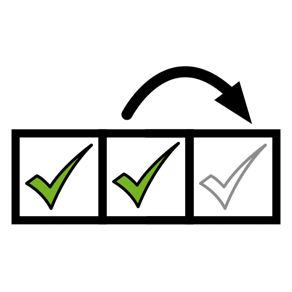
Quiero practicar más
Evalúo mi práctica
Todos los profesionales evalúan su propia práctica (artículo 14.3). Marca y anota lo que cambiarías.
- ¿El reto ha tenido sentido para el grupo? ¿Lo recordaban en cada sesión?
- ¿Los tiempos han sido realistas para 3 años? ¿Qué fase se ha alargado?
- ¿Ha participado cada niño o niña a su manera: palabra, gesto o tarjeta?
- ¿He ofrecido los tres niveles y he dejado subir y bajar en la misma sesión?
- ¿He variado los agrupamientos? ¿Cuál ha funcionado mejor?
- ¿Han bastado los apoyos visuales: agenda, tarjetas y pictogramas?
- ¿El rincón se usa de forma voluntaria y nadie lo vive como un castigo?
- ¿He contado a las familias lo que hacemos y les he preguntado qué les ayuda en casa?
Evaluación · registro del grupo
Así me siento: registro de observación
✓ lo hace solo · ~ con ayuda · · aún no, y el nivel en que lo logra:
①, ② o ③. Indicadores completos en la página 15. Solo nombre o iniciales; la hoja se queda en el centro.
| Nombre |
1 · CA 2.1Reconoce emociones |
2 · CRR 2.1Entiende el cuento |
3 · CRR 5.4 y 3.6Se expresa con el cuerpo |
4 · CA 1.1Nota su corazón |
5 · CA 2.1Respira para calmarse |
6 · DEE 1.1Explora y compara |
7 · CA 2.3 y 2.2Elige y pide ayuda |
8 · CRR 3.4Huella en el cartel |
9 · DEE 2.6 y CRR 1.1Da su opinión |
10 · CA 4.1Respeta a los demás |
Atención a la diversidad
Si en tu clase hay…
Dos medidas concretas de esta situación para cada caso, además de los tres niveles. Se describe lo que ayuda, sin
etiquetar a nadie.
| Si hay alumnado con… |
Medida 1 |
Medida 2 |
| TEA | Anticipa cada sesión con la agenda y la foto de Nube. Avisa antes de la música, del trueno del cuento y de la fiesta. | Ofrece alternativas a lo que le molesta: pincel o guante para la pintura, cascos y volumen bajo para la música. |
|---|
| TDAH | Tareas con movimiento: llevar a Nube, levantar las tarjetas, tocar el pandero o repartir los gomets. | Fases cortas, con una señal clara de inicio y de final, y un sitio cerca de ti en la asamblea. |
|---|
| TDL | Frases modelo cortas y siempre iguales, «Nube está enfadado». Amplía lo que diga sin corregirle. | Un pictograma con cada palabra clave y más tiempo para responder. Vale señalar. |
|---|
| Discapacidad intelectual | Empieza con dos emociones y añade una cada vez. En el nivel 1, objetos reales. | Las mismas rutinas cada día: agenda, cierre con Nube y respiración de la flor y la vela. |
|---|
| Discapacidad motora | Versión sentada de los movimientos y de las estatuas, como en las pausas activas de IdEducando. | Huella con la mano que pueda abrir o con un sello de mango grueso. Rincón accesible en silla de ruedas. |
|---|
| Discapacidad visual | Tarjetas con buen contraste y caras táctiles, con la boca de limpiapipas. Describe en voz alta cada escena. | El rincón siempre en el mismo sitio y con el camino libre. Que explore sus objetos con las manos. |
|---|
| Discapacidad auditiva | Señales que se ven y se notan: la tarjeta en alto para cambiar de música y el pandero en el suelo. | Tu cara siempre visible al hablar. Si usa lengua de signos española (LSE), sus signos para cada emoción. |
|---|
| Altas capacidades | Nivel 3 en cada sesión: inventar movimientos, explicar el porqué o proponer normas. | Que haga de guía del rincón en la sesión 8 y busque en casa qué música calma a su familia. |
|---|
| Incorporación tardía (recién llegados) | El gesto y la tarjeta valen igual que la palabra. Ten a mano el tablero de comunicación. | Pide a la familia cómo se dice cada emoción en su lengua y usadla junto a la nuestra. Ver el kit de bienvenida. |
|---|
Detectar a tiempo
Durante estas semanas, anota lo que ves, con fecha y sin poner etiquetas. Conviene fijarse si un niño o una niña:
- al final de la situación no reconoce ninguna emoción en una cara, ni con el nivel 1;
- no usa palabras, gestos ni miradas para pedir ayuda o enseñar lo que quiere;
- se enfada, llora o se asusta muy a menudo y no se calma ni con un adulto al lado;
- se hace daño o hace daño a otros cuando se enfada;
- reacciona siempre con mucho malestar a la música, a los ruidos o al tacto de la pintura;
- parece triste o con miedo muchos días seguidos y deja de jugar.
Si lo ves repetido, habla con la familia y con el equipo de orientación del centro; en la Región de Murcia, el equipo
de orientación educativa y psicopedagógica (EOEP). Sigue el procedimiento de tu centro. El
registro ABC de IdEducando ayuda a
anotar qué pasa antes y después.
Para las familias
En clase hablamos de cómo nos sentimos
Qué estamos haciendo
Estas semanas aprendemos a decir cómo nos sentimos.
Nos ayuda Nube, la mascota de la clase.
Conocemos 5 emociones:
- contento
 triste
triste- enfadado
 con miedo
con miedo- tranquilo
Entre todos hemos hecho el rincón de la calma.
Es un sitio de la clase para sentirnos mejor.
Va quien quiere. Nunca es un castigo.
Una idea para casa
Por la noche, preguntad: «¿Cómo te has sentido hoy?».
Puede contestar con una palabra, con un gesto o señalando una cara.
Contad también cómo os habéis sentido vosotros.
Jugad a oler la flor y soplar la vela: cogemos aire por la nariz y lo soltamos despacio por la boca.
Todas las emociones están permitidas. Lo que aprendemos es qué hacer con ellas.
Mensaje del cole
En el cole, lo que más le ayuda a calmarse es:
¿Qué le ayuda en casa? Contádnoslo:
Así me siento. IdEducando, octubre de 2026. Licencia CC BY-NC-SA 4.0. Los símbolos pictográficos utilizados son
propiedad del Gobierno de Aragón y han sido creados por Sergio Palao para ARASAAC (https://arasaac.org), que los
distribuye bajo Licencia Creative Commons BY-NC-SA.
Imprimible · para la agenda de cada sesión
Tarjetas para la agenda
Sesión 1: asamblea, jugar, recoger · 2: asamblea, cuento, jugar · 3: asamblea, bailar, descansar · 4: asamblea, correr,
respirar · 5: asamblea, tocar, elegir · 6: asamblea, pintar, rincón de la calma · 7: asamblea, jugar, normas · 8:
asamblea, fiesta, rincón de la calma. Velcro suave detrás de cada tarjeta.
Recorta por la línea de puntos.
 asamblea
asamblea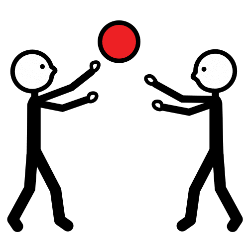
jugar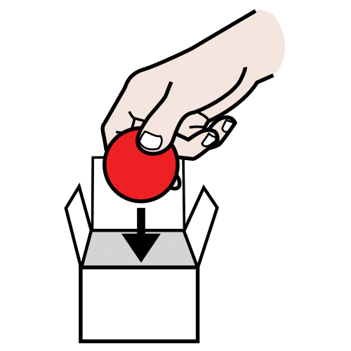
recoger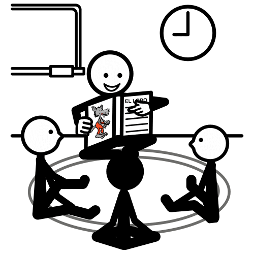
cuento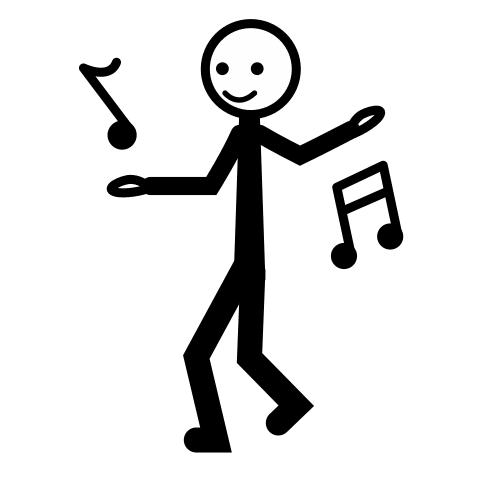
bailar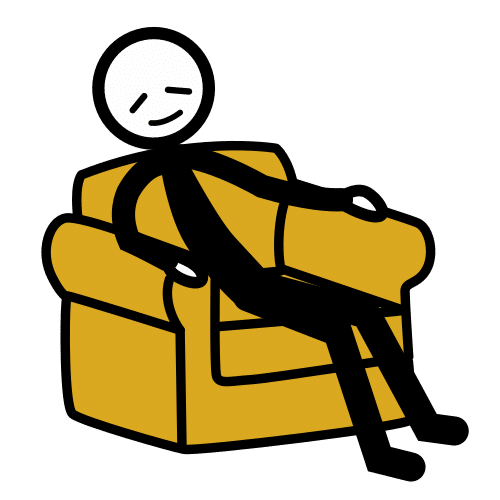
descansar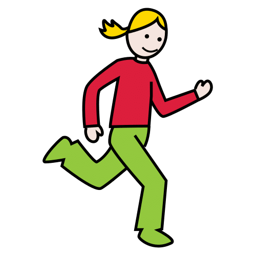
correr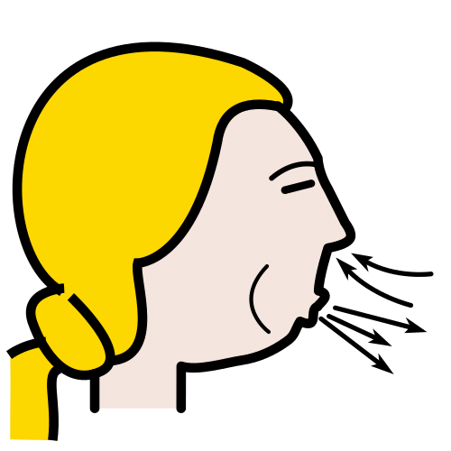
respirar tocar
tocar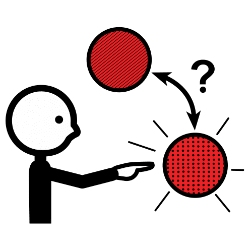
elegir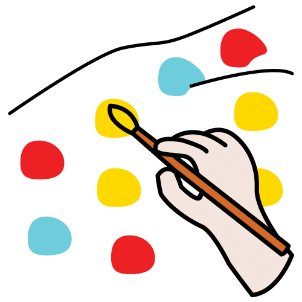
pintar rincón de la calma
rincón de la calma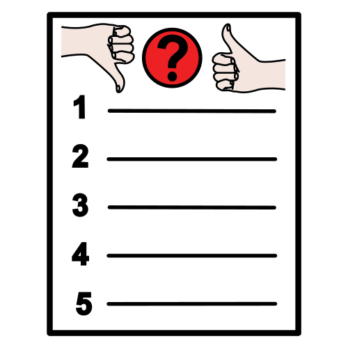
normas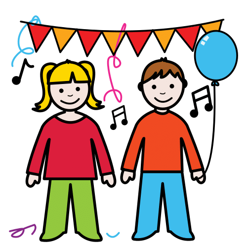
fiesta
Pictogramas: Sergio Palao. Origen: ARASAAC (arasaac.org). Licencia CC BY-NC-SA. Propiedad: Gobierno de Aragón. Las dos
tarjetas en blanco son para tus propios pictogramas.
Imprimible · sesiones 1 a 3 y 8
Tarjetas grandes de las emociones
Recorta por la línea de puntos. Cuélgalas con masilla en la zona de la asamblea.
- contento
- triste
- enfadado
- con miedo
Pictogramas: Sergio Palao. Origen: ARASAAC (arasaac.org). Licencia CC BY-NC-SA. Propiedad: Gobierno de Aragón.
Imprimible · sesiones 1 a 3 y 8
Tarjetas grandes de las emociones
Recorta por la línea de puntos. «¿Cómo estamos hoy?» va encima de las demás. En las dos en blanco, dibujad otra emoción
que salga en clase.
- tranquilo
- ¿Cómo estamos hoy?
Pictogramas: Sergio Palao. Origen: ARASAAC (arasaac.org). Licencia CC BY-NC-SA. Propiedad: Gobierno de Aragón.
Imprimible · sesiones 1, 2 y 8
Tarjetas pequeñas de las emociones
Imprime esta hoja 3 veces: salen 12 juegos de 5 tarjetas, uno por pareja. Recorta por la línea de puntos y guarda cada
fila con una goma.
Pictogramas: Sergio Palao. Origen: ARASAAC (arasaac.org). Licencia CC BY-NC-SA. Propiedad: Gobierno de Aragón.
Imprimible · sesión 2
Cuento: Nube y sus amigos
-
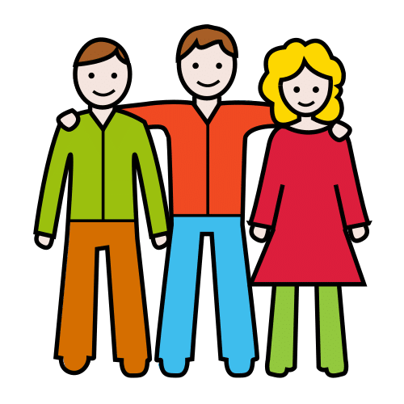
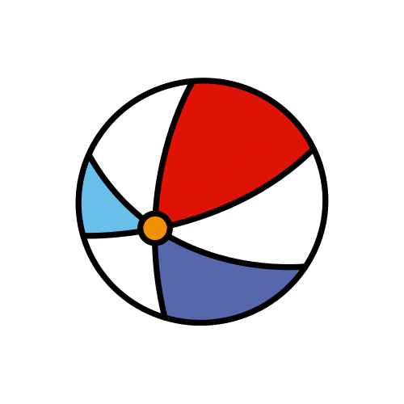
Nube juega a la pelota con sus amigos.
-
Un amigo le quita la pelota. Nube está enfadado.
-
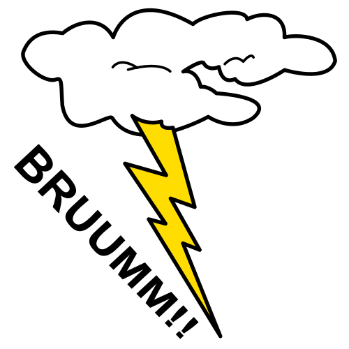
¡Brum! Suena un trueno. Nube tiene miedo.
Pictogramas: Sergio Palao. Origen: ARASAAC (arasaac.org). Licencia CC BY-NC-SA. Propiedad: Gobierno de Aragón.
Imprimible · sesión 2
Cuento: Nube y sus amigos
-
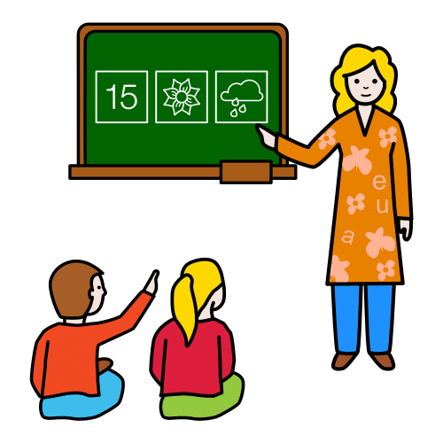
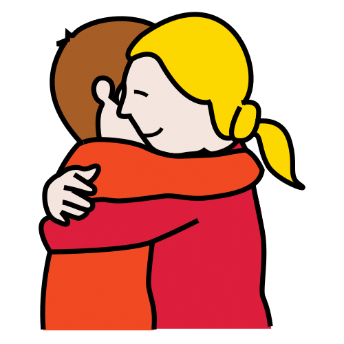
Nube busca a la seño y le pide un abrazo.
-
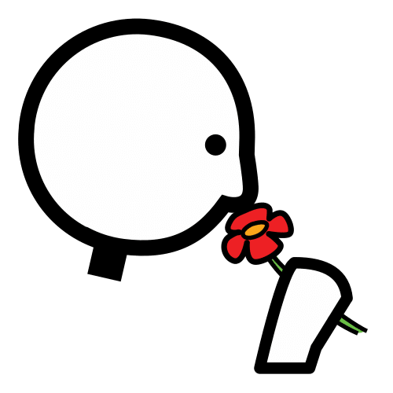
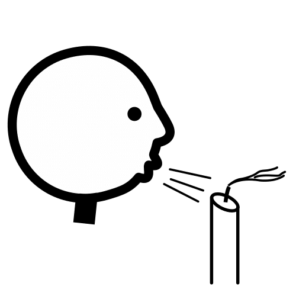
Nube huele la flor y sopla la vela.
-
Ya está tranquilo. ¡A jugar otra vez!
Pictogramas: Sergio Palao. Origen: ARASAAC (arasaac.org). Licencia CC BY-NC-SA. Propiedad: Gobierno de Aragón.
Imprimible · sesiones 4 a 8
Lo que me ayuda
Recorta por la línea de puntos. Velcro suave detrás de cada tarjeta y rugoso en el panel. En la tarjeta en blanco,
dibujad otra idea de la clase.
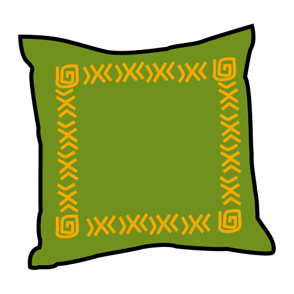
Abrazo el cojín- Cojo un peluche
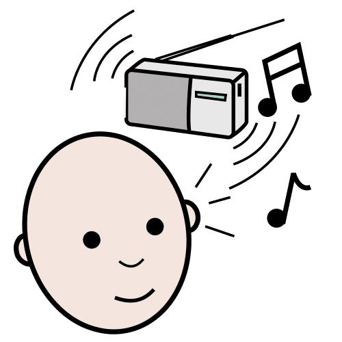
Escucho música suave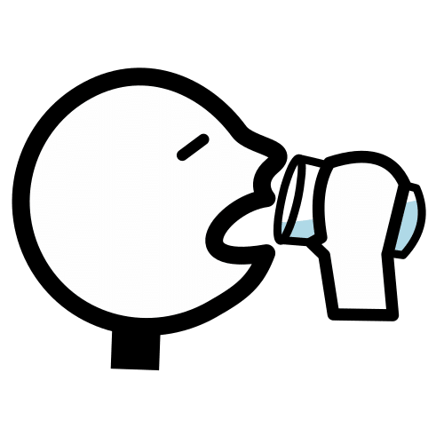
Bebo agua- Miro un cuento
- Pido un abrazo
-
Huelo la flor y soplo la vela
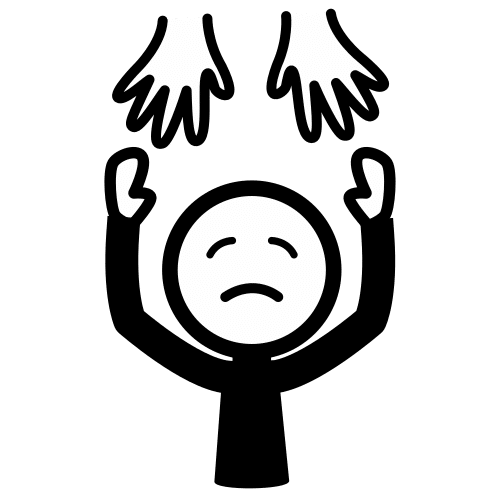
Pido ayuda
Pictogramas: Sergio Palao. Origen: ARASAAC (arasaac.org). Licencia CC BY-NC-SA. Propiedad: Gobierno de Aragón.
Nuestro rincón
de la calma
Un sitio para sentirnos mejor.
Pégalo en el centro del papel continuo: las huellas de las manos van alrededor. Pictograma: Sergio Palao. Origen:
ARASAAC (arasaac.org). Licencia CC BY-NC-SA. Propiedad: Gobierno de Aragón.
Imprimible · sesión 7
Normas del rincón para elegir
Recorta por la mitad. Esta va siempre; de la página siguiente, el grupo elige 1 o 2.
Pictogramas: Sergio Palao. Origen: ARASAAC (arasaac.org). Licencia CC BY-NC-SA. Propiedad: Gobierno de Aragón.
Imprimible · sesión 7
Normas del rincón para elegir
Recorta por la mitad. Cuelga las elegidas en el rincón, a la altura de los ojos de tu alumnado.
-

Cuido el material.
-
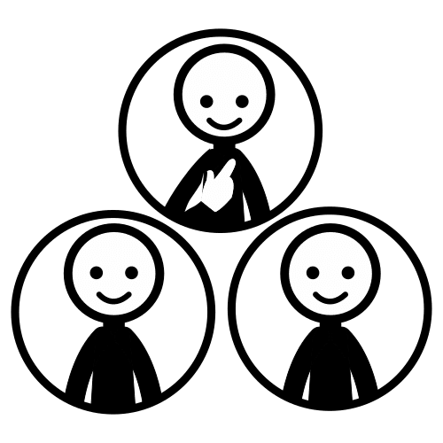
Espero mi turno.
Pictogramas: Sergio Palao. Origen: ARASAAC (arasaac.org). Licencia CC BY-NC-SA. Propiedad: Gobierno de Aragón.
Imprimible · sesión 8 · una por niño o niña
Así lo hago yo
Me llamo
|
Lo hago yo |
Con ayuda |
Quiero practicar más |
| Digo cómo me siento |
|
|
|
| Respiro como la flor y la vela |
|
|
|
| Uso el rincón de la calma |
|
|
|
Lee cada frase en voz alta y señala su pictograma. Cada niño o niña pega un gomet en una casilla de cada fila. Ninguna
opción es mejor que otra. Pictogramas: Sergio Palao. Origen: ARASAAC (arasaac.org). Licencia CC BY-NC-SA. Propiedad:
Gobierno de Aragón.
Fuentes y créditos
De dónde sale lo que decimos
Así me siento: situación de aprendizaje para 3 años, con DUA y multinivel. IdEducando, octubre de
2026. Ficha y novedades:
ideducando.es/material-gratuito/situacion-aprendizaje-3-anos-emociones
Currículo. Decreto 196/2022, de 3 de noviembre, por el que se establece la ordenación y el currículo
de la etapa de Educación Infantil en la Comunidad Autónoma de la Región de Murcia. BORM n.º 255, de 4 de noviembre de
2022: artículos 4.6 (pág. 33056), 7 (págs. 33057 y 33058), 14 (pág. 33060) y 17.3 (pág. 33061); anexo I (pág. 33068);
áreas, págs. 33078, 33083 a 33086, 33090, 33091, 33094 a 33097, 33102 a 33104 y 33107 a 33110; anexo III (pág. 33111).
DUA. CAST (2024). Pautas para el Diseño Universal para el Aprendizaje, versión 3.0.
udlguidelines.cast.org/es
Enseñanza multinivel. Collicott, J. (1991). Implementing multi-level instruction: Strategies for
classroom teachers. En G. L. Porter y D. Richler (Eds.), Changing Canadian Schools: Perspectives on disability and
inclusion (pp. 191-218). Roeher Institute. Inclusive Schools Network (2011). Using multi-level instruction
for a classroom of diverse learners. inclusiveschools.org
Emociones y calma. Blewitt, C. y otros (2018). Social and emotional learning associated with
universal curriculum-based interventions in early childhood education and care centers. JAMA Network Open,
1(8), e185727. Widen, S. C. y Russell, J. A. (2003). A closer look at preschoolers' freely produced labels for facial
expressions. Developmental Psychology, 39(1), 114-128. Murray, D. W., Rosanbalm, K., Christopoulos, C. y
Hamoudi, A. (2015). Self-regulation and toxic stress: Foundations for understanding self-regulation from an
applied developmental perspective (OPRE Report 2015-21). Office of Planning, Research and Evaluation.
Oposición. BORM n.º 18, de 23 de enero de 2026, anexo XVII, «Cuerpo de Maestros. 597031 - Educación
Infantil», págs. 1720 a 1724.
Músicas propuestas. Antonio Vivaldi, Las cuatro estaciones; Frédéric Chopin, Preludios op.
28; Edvard Grieg, Peer Gynt; Camille Saint-Saëns, El carnaval de los animales.
Pictogramas. «Los símbolos pictográficos utilizados son propiedad del Gobierno de Aragón y han sido
creados por Sergio Palao para ARASAAC (https://arasaac.org), que los distribuye bajo Licencia Creative Commons
BY-NC-SA». Si adaptas el material, mantén este texto. Con pictogramas de ARASAAC, el material no se puede vender.
Licencia. CC BY-NC-SA 4.0: puedes copiarlo y adaptarlo citando a IdEducando, sin fines comerciales y
con la misma licencia. Sin fotos ni datos del alumnado.